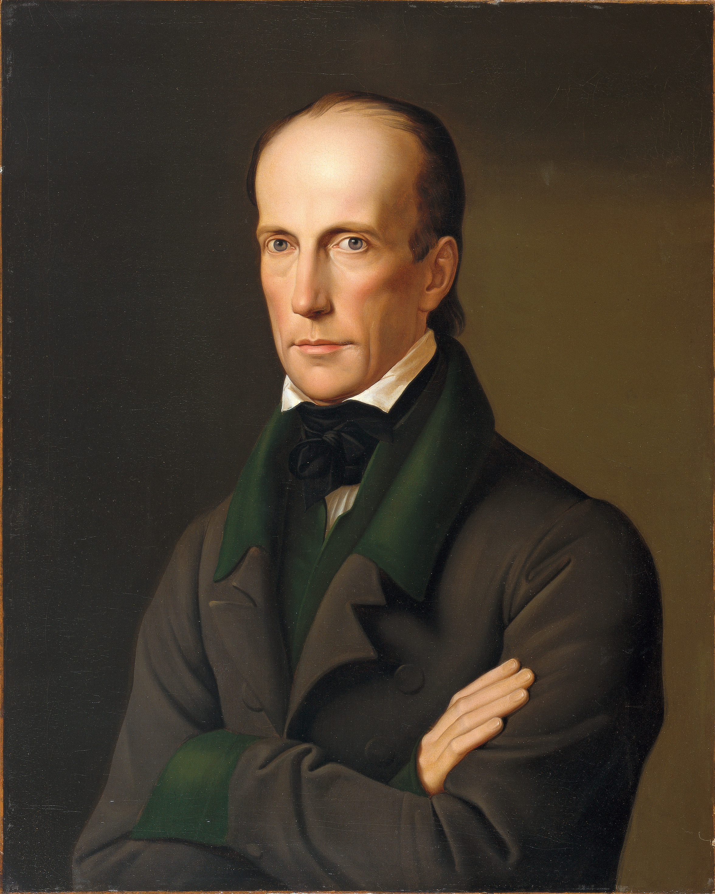
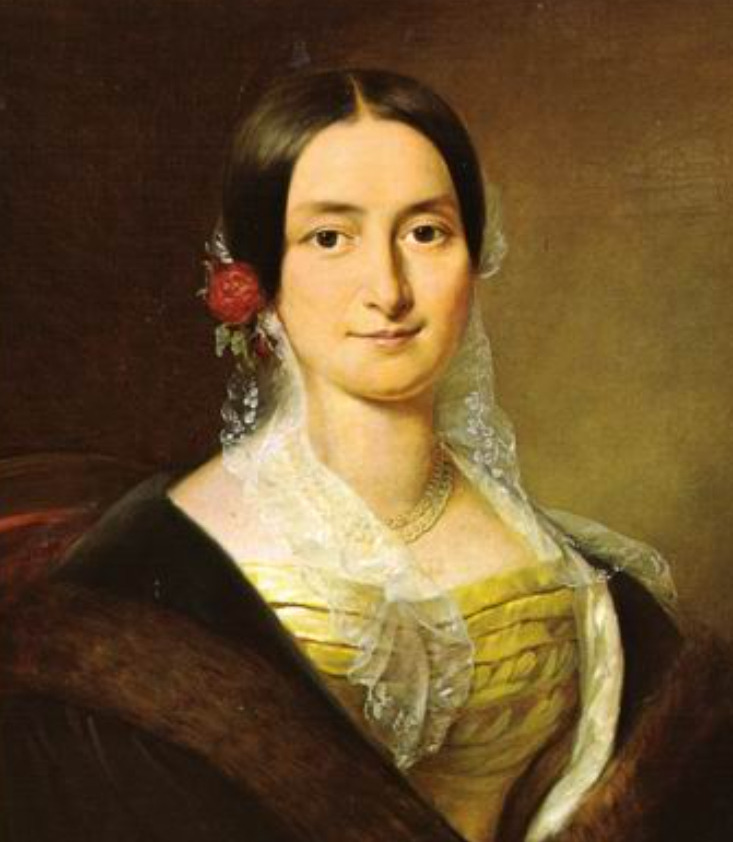
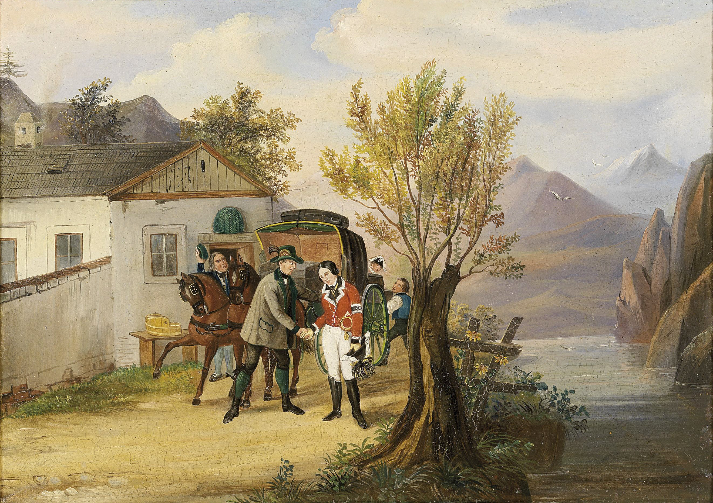
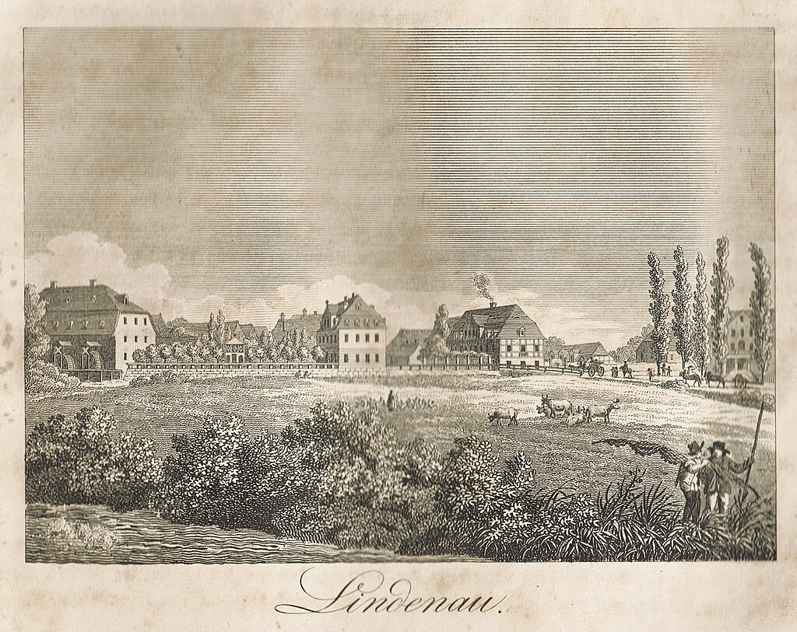

라이프치히 전투 (15) - 유리한 판세의 작은 균열
게시: 2025-09-01T09:30:21+09:00
라이프치히의 주전장은 나폴레옹과 알렉산드르가 있던 남쪽 전선이었습니다. 그러나 여기서 승패가 갈리기 위해서는 양측 모두 결정적인 순간을 위해 감춰두었던 예비대가 남쪽 전선에 제때 도착해야 했습니다. 역사의 아이러니는 양측 모두가 그 회심의 한 방을 라이프치히 북서쪽에 두고 있었다는 점입니다. 나폴레옹의 패는 네였고, 알렉산드르의 패는 블뤼허였습니다. 일이 이렇게 묘하게 된 것은 결국 베르나도트의 기발한 작전이 제대로 먹혔기 때문이었습니다. 기억하시겠지만, 10월 3일 바르텐부르크 전투를 통해 엘베강을 성공적으로 도하한 블뤼허의 슐레지엔 방면군은 곧 나폴레옹 본인의 추격을 받게 됩니다. 시작하자마자 최종 보스 나폴레옹과 맞닥뜨릴 위기에 봉착하자, 블뤼허는 원래 계획대로 힘들게 건넜던 엘베강을 다시 건너 북쪽으로 도주하려 했습니다. 그러나 베르나도트가 '그러지 말고 잘러(Saale) 강을 건너 서쪽으로 피하자'라는 기발한 제안을 해왔고, 그게 제대로 먹혔기 때문에 10월 16일 블뤼허의 위치가 라이프치히 북서쪽이 된 것입니다. 닭 쫓던 개가 되어 헛걸음을 친 나폴레옹은 내친 김에 엘베강을 건너 베를린으로 가네 어쩌네 하고 시간 낭비를 했고, 덕분에 운명의 10월 16일, 나폴레옹은 내선이동이라는 결정적 이점에도 불구하고 라이프치히에 자신의 전력을 모으지 못했습니다. 아예 엘베강을 건너 데사우(Dessau)까지 갔던 레이니에의 제7군단은 물론, 수암의 제3군단까지도 미처 라이프치히에 도착하지 못했던 것입니다. 나폴레옹도 블뤼허가 라이프치히 북서쪽 어딘에가 있다는 것을 알고 있었고, 그래서 네를 그쪽에 배치하며 대비하고 있었습니다. 그렇게 네와 블뤼허가 모두 라이프치히 북서쪽에 있다는 점은 사실 나폴레옹에게 절대적으로 유리한 것이었습니다. 아무래도 블뤼허가 더 멀리 떨어진 곳에 있을 수 밖에 없으니, 남쪽 리버트볼크비츠 일대에서 전투가 시작되어 네와 블뤼허가 모두 서둘러 달려온다면, 결국 현장에 먼저 도착하는 것은 네일 수밖에 없었기 때문입니다. 그러니까, 나폴레옹이 병력 열세를 극복할 회심의 비책으로 의존하고 있던 내선이동의 장점은 여전히 살아있었던 것입니다. 혹시 네와 블뤼허가 모두 리버트볼크비츠로 달려오는 도중에 부딪히면 어떻게 되는 것일까요? 그런 경우도 나폴레옹이 훨씬 유리했습니다. 가령 네가 이끌고 있던 3개 군단, 즉 마르몽의 제6군단, 베르트랑의 제4군단, 수암의 제3군단 중 두어 개 사단만 후위대로 남겨 블뤼허를 막게 하면 모든 것이 해결되었습니다. 남을 돕는 것은 어렵지만 훼방 놓는 것은 쉬운 일입니다. 2개 사단 병력으로는 절대 3개 군단을 거느린 블뤼허를 막을 수 없을 것이고 남겨둔 사단들은 결국 박살이 났겠지만, 블뤼허가 아무리 압도적으로 우월한 병력을 가지고 있다고 해도 방어하기 유리한 길목을 지키고 있는 적을 무찌르는 데는 시간이 필요하기 마련입니다. 그러니까 블뤼허가 마침내 네의 후위대를 뚫고 리버트볼크비츠로 달려왔다고 해도, 이미 나폴레옹이 네의 증원군의 도움까지 받아 남쪽 전선에서 연합군을 격파한 뒤라면 아무 소용이 없게 되는 것입니다. 즉, 바그람 전투에서 지각했던 요한 대공의 역할을 블뤼허가 하게 되는 것이었지요. (https://nasica1.tistory.com/87 참조)

(여기서 또 소환되는 오스트리아의 요한 대공(Johann Baptist Joseph Fabian Sebastian von Österreich)입니다. 오스트리아 황제 프란츠 1세의 동생으로서, 나폴레옹 전쟁사에서의 모습을 보면 버르장머리 없고 무능력한 철부지 황족처럼 보입니다. 그러나 그는 합스부르크가의 인물치고는 나름 자유주의적인 사상을 일부 옹호하여 대중의 호감을 얻었습니다. 그 가장 큰 이유는 귀족이 아닌 평민 출신의 여성 안나(Anna Plochl)와 결혼하여 그 영향을 받았기 때문입니다. 결혼이 남자에게 그렇게 중요합니다. 이 그림은 1828년, 그러니까 결혼하기 1년 전에 그려진 것입니다.)

(이 여성이 요한 대공비인 안나(Anna Plochl)입니다. 안나가 요한 대공과 만나게 된 계기가 참 K-드라마틱합니다. 그녀는 오스트리아 서쪽 산간 지방인 바트 아우제(Bad Aussee)의 어느 역참장의 맏딸이었습니다. 그녀가 15살이던 1819년, 웬 귀족 아저씨가 나타나 빈으로 갈 마차를 요구했는데, 그 마차를 몰 마부를 구할 수가 없었습니다. 그 때 역참장의 딸답게 마차 모는데 자신이 있었던 안나가 소년 복장을 하고 마차를 몰았습니다. 그런데 그 귀족 아저씨는 39세의 요한 대공이었고, 요한 대공은 이 마부가 실은 소녀라는 것을 알아보았습니다. 이 당찬 소녀에게 매력을 느낀 요한 대공은 자신의 신분을 밝혔는데, 맹랑한 안나는 '뻥까지 마세요'라며 코웃음을 쳤습니다. 요한 대공은 반드시 자신의 신분을 밝혀줄 증거와 함께 다시 찾아오겠다고 했는데, 요한 대공은 그 약속을 지켰을 뿐만 아니라, 자주 그 역참에 들렀고, 결국 안나와 결혼했습니다. 귀족과 평민의 결혼을 귀천상혼(morganatic marriage)라고 하는데, 당시엔 금기시 되는 것이었고 요한 대공은 그 결혼 덕분에 합스부르크 황위 계승권을 잃었습니다. 그래서 불행했느냐? 물론 이 부부는 행복했고 아들 낳고 잘 살았습니다. 거만한 빈의 귀족들도, 안나의 긍정적이고 유쾌한 성격에 대해 툴툴거리면서도 존중할 수 밖에 없었고, 안나 뿐만 아니라 와이프 덕택에 요한 대공까지도 많은 이들의 사랑을 받았다고 합니다.)

(안나와 요한 대공의 만남을 그린 그림입니다.) 이렇게 라이프치히 전투는 나폴레옹의 큰 그림, 즉 내선이동의 장점 덕분에 처음부터 나폴레옹이 승리할 수밖에 없는 판세였습니다. 그런데 그렇게 승리를 자신하던 나폴레옹의 큰 그림에 금이 가게 됩니다. 대체 어디서부터 잘못되었던 것일까요? 몇 가지 요소가 있습니다만 가장 큰 것은 다름 아닌 나폴레옹 본인이었습니다. 1) 천재 또는 바보 슈바르첸베르크 먼저, 라이프치히 서쪽인 린더나우(Lindenau) 마을에 귤라이의 오스트리아 제3군단을 투입한 슈바르첸베르크의 작전이 좋았습니다. 실은 좋은 작전안은 아니었습니다. 린더나우 방면 지형이 방어측에 매우 유리했기 때문입니다. 10월 16일 아침, 귤라이가 린더나우 방면을 살펴보니, 이미 아리기(Jean-Toussaint Arrighi de Casanova)의 프랑스군 수천 명이 강력한 포대까지 장착한 보루 몇 개를 쌓아놓고 철통 같은 방어망을 구축해놓고 있었습니다. 따라서 이쪽 방면의 공격은 성공 가능성이 매우 낮다고 생각했지만, 그래도 귤라이는 공격을 진행했습니다. 받은 명령을 무시할 수 없기 때문이기도 했지만, 이렇게 포성을 울리며 공격을 해야 그랑다르메의 시선을 끌어 이쪽으로 병력을 유인할 수 있기 때문이었습니다. 귤라이는 이번 작전에서 자신의 역할은 주인공이 아니라 어디까지나 유인용 미끼라는 것을 잘 이해햐고 있었습니다.

(다시 나오는 이 지도에서 린더나우의 위치를 보십시요.)

(라이프치히 전투 이후인 1815년에 그려진 린더나우의 전경입니다. 이 그림만 봐서는 어떤 지형 때문에 난공불락이라고 했는지 몰겠군요. 정확히 말하면 아리기의 프랑스군이 구축했던 보루는 린더나우 마을이 아니라 그 바로 옆입니다.) 2) 나폴레옹의 인사 실패 린더나우를 지키고 있던 아리기는 나폴레옹의 친척인 덕분에 승진한 코르시카 출신 인물로서, 한마디로 무능한 사람이었습니다. 그래서 나폴레옹도 처음에는 별로 중요한 장소가 아니었던 라이프치히에 그에게 수천의 수비대만 주어 주둔시켰던 것입니다. 그런데 갑자기 라이프치히가 결전 장소로 정해지자, 그에겐 가장 안 중요할 것 같지만 가장 지키기 쉬운 장소였던 린더나우를 요새화하고 지키라는 임무가 주어졌습니다. 린더나우는 정말 지키기 쉬운 험한 지형의 장소라서, 슈바르첸베르크의 원래 명령은 블뤼허도 일부 군단을 이쪽으로 보내 귤라이와 합세하여 여기를 공략하라는 것이었으나, 블뤼허도 이런 험한 곳을 공격하는 것은 슈바르첸베르크 같은 바보나 할 짓이라고 판단하고는 알렉산드르에게 항의하여 자신은 린더나우 공격에서 빠지기로 합의할 정도였습니다. 그러니 아리기는 그냥 어떻게든 힘을 쥐어짜 이곳을 최대한 지키다, 결국 힘이 부쳐 퇴각해야 할 경우 그냥 퇴각하면 되었습니다. 진짜 핵심은 나폴레옹이 남쪽 전선에서 승리할 때까지 시간을 끄는 것이었으니까요. 그런데 사리분별 못하는 아리기는 눈 앞에 1개 군단급 병력이 나타나자, 겁에 질려 네에게 긴급 구원 요청을 보냈습니다. 3) 네(Michel Ney)가 또! 네는 용기와 끈기, 결단성에 있어 타의 추종을 불허하는 인물이었으나 결코 전략에 대한 이해력이 좋은 편이 아니었습니다. 바우첸 전투에서 나폴레옹이 연합군을 섬멸하지 못했던 것에도 네의 판단 착오가 매우 큰 몫을 한 바 있었지요. (https://nasica1.tistory.com/672 참조) 나폴레옹의 명령을 문자 그대로 따르느냐, 혹은 일선 지휘관이 현장의 상황을 보고 나름대로의 판단을 내리느냐는 언제나 까다로운 문제였는데, 10월 16일 아침 네에게 내려진 명령은 '후위대만 남기고 병력들, 특히 마르몽의 제6군단을 빨리 리버트볼크비츠로 보내라'는 것이었습니다. 나폴레옹이 마르몽의 제6군단에 집착한 것에는 합당한 이유가 있었습니다. 이 군단은 창설 이래 한 번도 패배를 겪지 않았던 정예군단이었고, 최근 몇 주 동안 큰 전투를 치르지 않아 전력을 그대로 유지하고 있었기 때문이었습니다. 네는 처음에는 북쪽에서 내려오는 중이던 제3군단이 도착하는 대로 그들과 교체하여 마르몽과 베르트랑의 군단들을 리버트볼크비츠로 보낼 생각이었습니다. 그러나 아리기의 설레발 요란한 구원요청을 받고는, 베르트랑의 군단을 그 쪽으로 파견하고 맙니다. 이것이 1차 오류였습니다. 네가 린더나우의 지형과 상황을 제대로 알았다면, 보내더라도 베르트랑의 군단 중 1개 사단 정도만 보냈을 것입니다. 그러나 네는 블뤼허보다도 린더나우의 지형을 모르고 있었습니다. 4) 시간 낭비의 대가 10월 초 블뤼허 요격에 실패했던 나폴레옹은 떡 본 김에 제사지낸다는 식으로 엘베강을 건너 베를린으로 진격한다는 작전을 구상했고, 그에 따라 레이니에와 수암의 군단들은 그쪽 방면으로 진격하며 시간을 낭비했습니다. 내선이동에 의존하는 큰 그림에 있어 그런 시간 낭비는 치명적이었습니다. 결국 레이니에의 제7군단은 물론이고, 수암의 제3군단도 10월 16일 라이프치히에 미처 도착하지 못했습니다. 나폴레옹은 훗날 제3군단이 제때 도착하지 못한 것이 라이프치히 전투 패배의 결정적 요인이라고 되새긴 바 있었습니다만, 사실 그건 책임 전가일 뿐이었습니다. 그렇게 만든 것이 나폴레옹 본이이었기 때문이었습니다. 결국 베르트랑은 린더나우로 가버리고, 자신을 교체해준다는 제3군단은 아직 나타나지도 않은 상태에서 마르몽의 눈 앞에 블뤼허의 슐레지엔 방면군이 나타나게 됩니다. Source : The Life of Napoleon Bonaparte, by William Milligan Sloane Napoleon and the Struggle for Germany, by Leggiere, Michael V With Napoleon's Guns by Colonel Jean-Nicolas-Auguste Noël https://www.britannica.com/event/Napoleonic-Wars/Dispositions-for-the-autumn-campaign https://www.historyofwar.org/articles/battles_leipzig_16_october.html https://warhistory.org/@msw/article/leipzig-battle-of-the-nations https://www.napolun.com/mirror/napoleonistyka.atspace.com/Leipzig_battle.htm https://www.napoleon-empire.org/en/battles/leipzig.php https://en.wikipedia.org/wiki/Archduke_John_of_Austria https://en.wikipedia.org/wiki/Lindenau_(Leipzig)